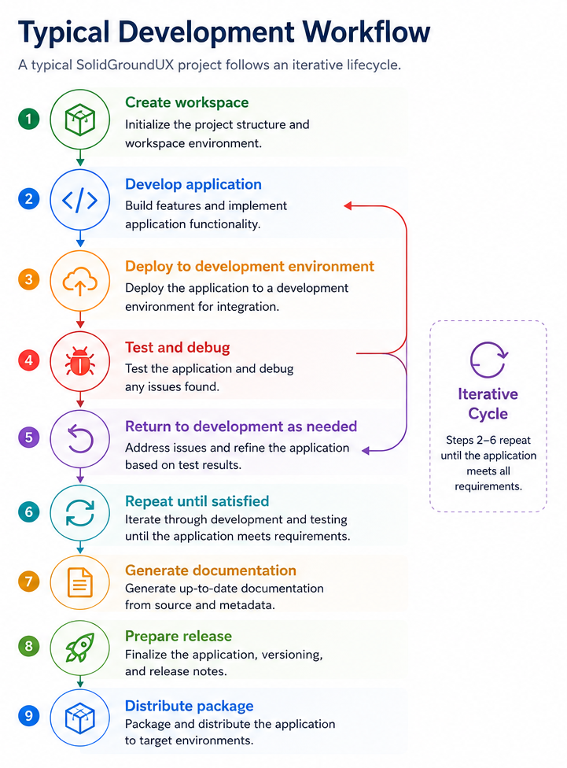

SolidGroundUX Documentation
Typical Development Workflow
A typical SolidGroundUX project follows an iterative lifecycle:

The SDK tools automate much of the repetitive work involved in these stages, allowing developers to focus primarily on application functionality.